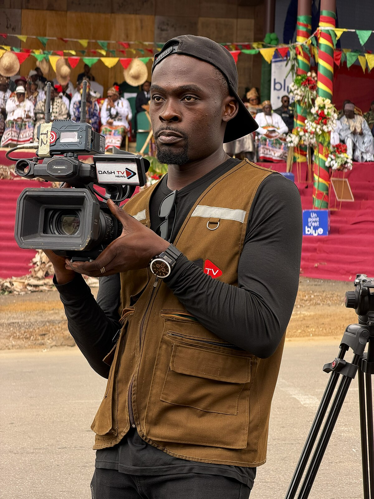

Breaking Into the Industry
Most people who work in live event production did not start out on a giant arena tour; they started small and worked their way up. Many begin as stagehands with a local crewing company, pushing cases and learning how a stage actually goes together. Others get their first experience running sound or lights for school events, churches, or small clubs where one person often does several jobs at once. College broadcasting programs and student film sets are another common entry point, especially for camera operators and video engineers. What matters most early on is reliability, because showing up on time and working hard gets you invited back. Over a few years, those repeat calls turn into relationships, and relationships turn into bigger shows. Eventually a promoter, production manager, or tour hires you for a position with real responsibility, and your career begins to build its own momentum.
Skills That Get You Hired
Technical skill is important in this industry, but it is rarely the only thing that gets someone hired for a tour. Crew chiefs look for people who stay calm under pressure, since live shows cannot be paused when something goes wrong. Communication matters just as much, because audio, lighting, video, and staging departments all have to coordinate on tight schedules. Physical stamina is a genuine requirement, as load-in days can run twelve hours or more with heavy lifting throughout. Problem solving is constant, whether it is a failed cable minutes before doors or a truck that arrived late. Many successful crew members also learn the basics of every department, not just their own, which makes them far more valuable on smaller tours. Finally, a professional attitude travels fast in a small industry where nearly every job comes from word of mouth.
